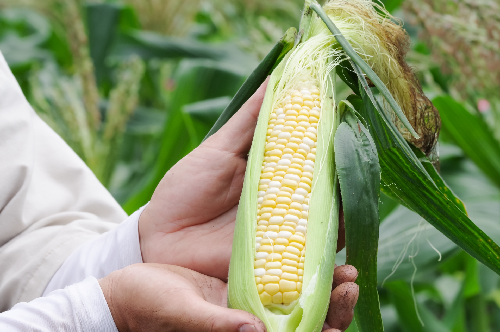

朝どりオーガニック野菜を
ご自宅で
「スグ食べ」は、厳選したオーガニック農家さんの
穫れたて野菜を販売しています。
食材から選べるのはもちろん、生産者からも選べます。
生産方法や生産地、それぞれ異なるこだわりで、
お気に入りの農家さんを見つけてください。
最短で24時間以内に届く
新鮮なオーガニック野菜宅配サービスです。
スグ食べが選ばれる
3
つの理由
-
Point
01本当の意味での産地直送
「なるべく収穫したばかりの状態で、野菜を味わって欲しい。」スグ食べでは、既存の産地直送サービスのように箱詰め用の倉庫を介すことはありません。農家が収穫したその日に、お客様の元へ直送で野菜をお送りします。
 -
Point
02安心安全なオーガニック農作物
出品している生産者は、有機栽培もしくは自然栽培の農家のみ。全ての商品が無農薬・無化学肥料など、安全にこだわって生産された「オーガニック農作物」です。そのため、どの商品も安心してお買い求めいただけます。
-
Point
03たくさんの旬な野菜との出会い
年間数十種の野菜を作る生産者から、今が旬の多様な野菜が届きます。スグ食べでは生産者ごとに商品が異なります。中には年間100種類もの多品種生産をしている生産者も。旬な野菜はもちろん、珍しい野菜とも出会えます。
自信があるから、是非食べてもらいたい
1回限り！
少量お試しセット
-

生産者
千葉県松戸市
ベジックス
旬＊お試し野菜セット(6品目)
￥1,280（税込 / 送料別）
-
生産者
長野県 飯田市
くちぶえ農園
旬＊お試し野菜セット(6品目)
￥1,280（税込 / 送料別）
初回
限定
お試しセットを注文
実はまだまだこんなに少ない、
日本のオーガニック農家
オーガニック農家は、
国内全体の約0.5
％
最近はレストランなどでもよく目にするのでもっとたくさんあるかと思いきや、実はオーガニック農家は国内農家の0.5％しか存在していません。でもその0.5％のオーガニック農家は、健やかな野菜を安心して食べてもらいたいという強い気持ちで大切に野菜を作っています。スグ食べでは、そんな農家さんを厳選し、出品していただいています。農家さんによって栽培方法も違います。自分や家族の体を作る礎となる野菜の栽培方法、この際把握してみては？
きちんと知っておきたい、
栽培方法による違い
-
自然栽培
第三者機関認証ナシ
農薬・肥料・堆肥など
-
有機栽培
第三者機関認証アリ
特別栽培
第三者機関認証ナシ
農薬：栽培期間中不使用
-
特別栽培
第三者機関認証アリ
特別栽培
第三者機関認証ナシ
節減対象農薬：当地比5割減
化学肥料（窒素成分）：当地比5割減
こんな農家さんが登録しています

私たちの野菜、
こんなにおいしいんです
スグ食べの品質保証
商品に不備があった際には、
スグ食べが “全額”
返金対応します
スグ食べに出品している農家さんたちは、「大切に育てた自慢の農作物を、できるだけ美味しい状態で食べてもらいたい。」
そんな想いを持った農家さんばかりです。
そのため、収穫から梱包・出荷にいたるまでしっかりと品質管理されています。
とはいえ、実物を見ずに野菜や果物を購入するのはちょっと不安…
そんな方にも安心してご購入いただけるよう、スグ食べでは品質保証をお約束しています。
万が一届いた商品に不備があった際には、スグ食べにて全額返金対応いたします。
おかげさまで感謝のお声をいただいています
食べてわかった、この違い
よくある質問
-
Q
産地直送のサービスってよく見るけど何が違うの？
A
鮮度が抜群に違います。
通常の産直サービスは、一度倉庫などに野菜を集め、そこで箱詰め作業をして配送しています。この仕組みでは、お客様が商品を受け取る時には収穫してから3,4日が経過しています。スグ食べでは、箱詰め作業を農家さんにお願いすることにより、最短で収穫当日に商品を受け取ることができます。
-
Q
どんな農家さんが登録してるの？
A
農薬不使用にこだわる、オーガニック農家さんのみが登録しています。
有機栽培や自然栽培などの環境に配慮した農法で生産するには、通常以上に費用も手間もかかります。そんな中でも、「安心な野菜を食べて欲しい」という強い思いを持って、こだわって野菜を作っている農家さんがいます。 そういった、厳選されたオーガニック農家さんのみが登録しているため、安心してお買い物を楽しんでいただけます。
自信があるから、是非食べてもらいたい
1回限り！
少量お試しセット
-
生産者
千葉県松戸市
ベジックス
旬＊お試し野菜セット(6品目)
￥1,280（税込 / 送料別）
-
生産者
長野県 飯田市
くちぶえ農園
旬＊お試し野菜セット(6品目)
￥1,280（税込 / 送料別）
初回
限定
お試しセットを注文